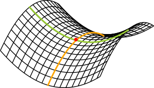
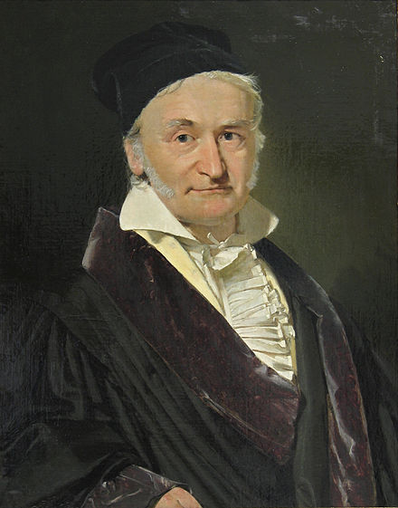

Topology
Gaussian Curvature:
$$K = \frac{1}{r_1} \frac{1}{r_2}$$
(Make it so that the next pictures load in on the same page, rather than calling up another page!)
(Also, there is no page numbers yet!)


''If a curved surface is a development of any other
surface, the measure of the curvature remains
unchanged in every single point.''